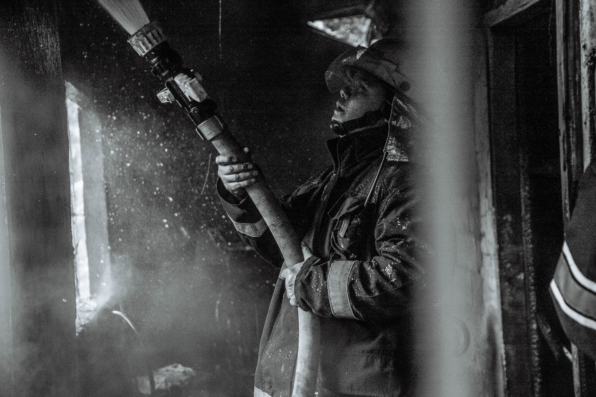
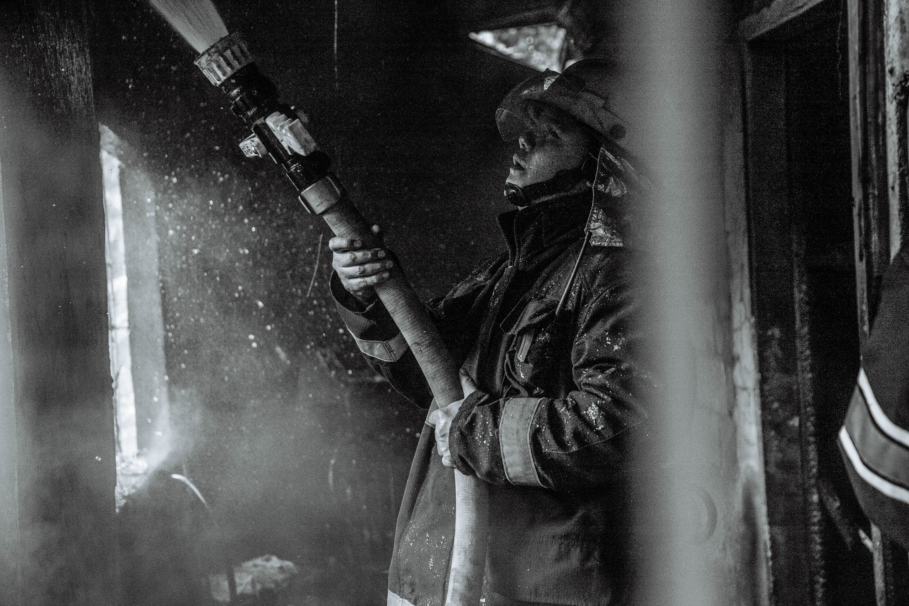

El Cuartel De Bomberos Coronel (B) “Alipio Atilano Ramírez”, se dedica a la prestación de servicios públicos a la comunidad, prestando su apoyo para extinguir incendios ya sea ocasionados por el hombre u obra natural, socorrer en algún accidente, intervenir en el salvamento fluvial y en el rescate y el salvamento de montaña, llevar a cabo actividades informativas y formativas para la población en general que persigan limitar las causas y las consecuencias de los incendios y de los accidentes y aumentarla autoprotección de la ciudadanía, entre estas actividades, le corresponde, en los municipios carentes (Municipio Miranda, Municipio Sucre, Municipio Rafael Rangel, Municipio La Ceiba, Municipio Monte Carmelo) de servicios municipales de prevención y extinción de incendios, emitir informe, en la forma que se determine por reglamento, previamente a la autorización de la autoridad competente, sobre los proyectos de nueva construcción, de reforma yde actividades, así como inspeccionar los establecimientos y los locales públicos con la finalidad de determinar el cumplimiento de la normativa de prevención de incendios, estudiar e investigar las técnicas, las instalaciones y los sistemas para la protección contra incendios en relación a la normativa específica en esta materia. cumpliendo así con su misión de “salvar vidas y vienes”.